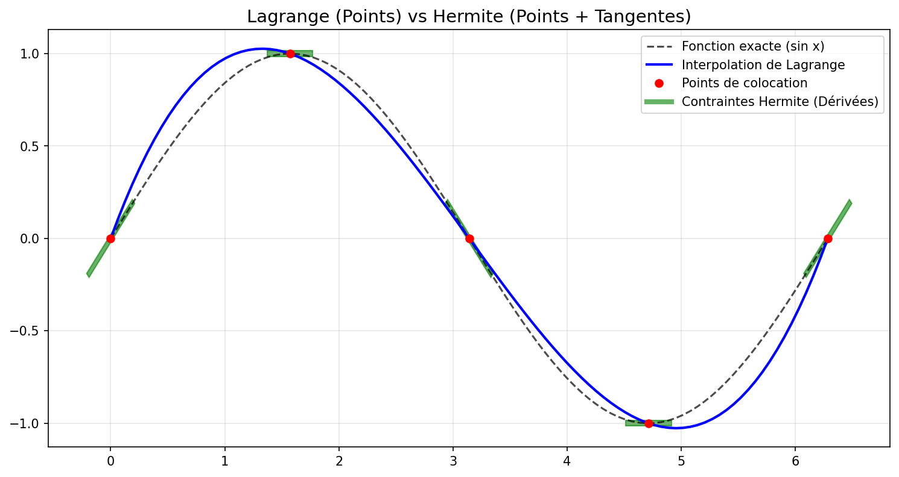
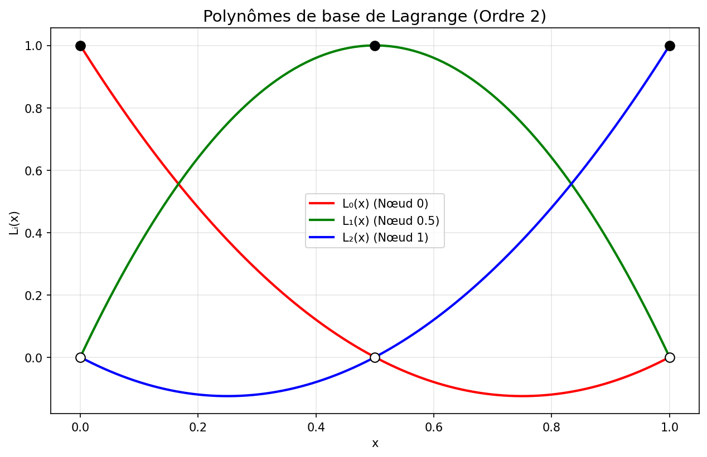
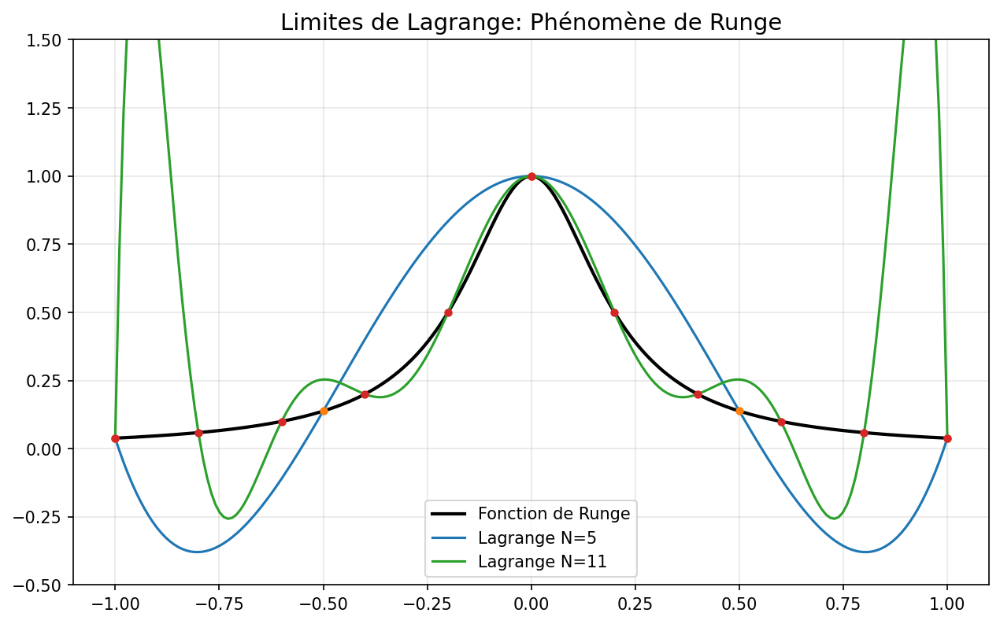

1. Introduction à l'Interpolation
Dans la méthode des éléments finis, nous cherchons à approximer une fonction complexe \( u(x) \) par une combinaison de fonctions simples (polynômes). Le choix de ces polynômes est crucial pour la précision de la simulation.

Comparaison visuelle : Lagrange passe par les points, Hermite respecte aussi les tangentes.
2. Polynômes de Colocation
C'est l'approche la plus intuitive pour une modélisation simpliste.
Principe
On cherche un polynôme \( P(x) \) qui passe exactement par un ensemble de points donnés \((x_i, y_i)\).
$$ P(x_i) = y_i \quad \text{pour } i = 0, \dots, n $$
Intérêts et Limites
- ✅ Simplicité : Facile à comprendre conceptuellement.
- ❌ Instabilité : Résoudre le système linéaire \( V \cdot a = y \) (avec la matrice de Vandermonde) est numériquement très instable pour \( n \) grand.
- ❌ Coût : Difficile à calculer pour des degrés élevés.
3. Polynômes de Lagrange
Les polynômes de Lagrange sont une forme plus élégante et plus précise pour construire l'interpolation. Ils sont la base des éléments finis classiques.
Définition
On construit une base de polynômes \( L_i(x) \) telle que :
$$ L_i(x_j) = \delta_{ij} = \begin{cases} 1 & \text{si } i=j \\ 0 & \text{si } i \neq j \end{cases} $$
Le polynôme d'interpolation s'écrit alors simplement :
$$ P(x) = \sum_{i=0}^n y_i L_i(x) $$

Polynômes de base de Lagrange quadratiques (n=2). Notez comment chaque fonction vaut 1 à son nœud et 0 aux autres.
Pourquoi Lagrange est meilleur ?
- ✅ Localisation : Chaque coefficient \( y_i \) correspond directement à la valeur de la fonction au nœud \( i \).
- ✅ Stabilité : Bien mieux conditionné que la base monomiale \((1, x, x^2...)\).
- ✅ Éléments Finis : Permet d'assurer la continuité \( C^0 \) entre les éléments facilement.
⚠️ Limites de Lagrange (Phénomène de Runge)
Bien que précis, augmenter le degré des polynômes de Lagrange sur des points équidistants peut provoquer des oscillations violentes aux bords de l'intervalle. C'est pourquoi en FEM, on préfère utiliser
beaucoup d'éléments de bas degré plutôt qu'un seul élément de très haut degré.

4. Polynômes d'Hermite
Pour approximer au mieux une fonction, il ne suffit pas de passer par les points, il faut aussi respecter la "direction" de la courbe.
Principe
L'interpolation d'Hermite impose des conditions sur la valeur de la fonction ET sur ses dérivées d'ordre supérieur.
$$ P(x_i) = y_i \quad \text{ET} \quad P'(x_i) = y'_i $$
Intérêts Majeurs
- ✅ Précision Supérieure : Capture la courbure de la fonction, pas seulement sa position.
- ✅ Continuité \( C^1 \) : Essentiel pour certains problèmes physiques (ex: poutres, plaques) où la dérivée (pente) doit être continue entre les éléments.
- ✅ Réduction de l'erreur : L'erreur d'approximation diminue plus vite qu'avec Lagrange.
Cependant, ils sont plus complexes à implémenter car ils nécessitent plus de degrés de liberté par nœud (valeur + dérivée).
Résumé Comparatif
| Type |
Contraintes |
Continuité FEM |
Usage Typique |
| Colocation |
Valeurs aux points |
Difficile |
Modélisation simpliste, introduction |
| Lagrange |
Valeurs aux points (Base orthogonale) |
\( C^0 \) (Continue) |
Standard FEM (Thermique, Fluides, Élasticité) |
| Hermite |
Valeurs + Dérivées |
\( C^1 \) (Lisse) |
Poutres (Euler-Bernoulli), Plaques, Coques |